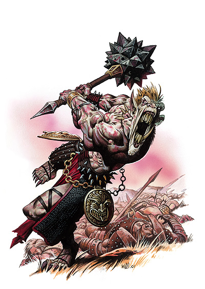
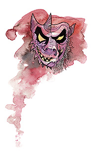

厄瑞斯努（Erythnul）

无常者
中等神力
邪徽：半恶魔半野猪面具

居住位面：Pandemonium
阵营：混乱邪恶
神职：仇恨，嫉妒，怨恨，恐慌，丑陋，屠戮
信徒：野蛮人，战士，游荡者，劫掠者，法外凶徒
牧师阵营：混乱邪恶，混乱中立，中立邪恶
领域：混乱，邪恶，诡术，战争
偏好武器：钉头锤
屠戮之神厄瑞斯努拥有着一副一般人类都该是视为恐怖的外貌。他一般的形象是一个拥有着纠结的肌肉与壮实的骨架的男人。他的皮肤红润并带有斑点，似乎是鲜血从他的每一根毛孔里正不段渗出一般。在战斗中，他的形象会在人类，豺狼人，熊地精，食人魔，以及巨魔中变来变去。这变化多端的外形正是应了他的头衔――无常者之名。他在战斗中使用着一把巨大的双手用钉头锤。这件武器的石质地的头部打了许多的孔，这样，厄瑞斯努在挥舞它的时候，会发出吓人的尖啸声。
教义
厄瑞斯努是个掌管着痛苦与屠戮的野蛮神祗。在文明社会，他的追随者（包括邪恶战士，野蛮人和游荡者）往往组成小型的邪恶犯罪教团。而在野蛮的部落中，比如邪恶人类蛮族部落，豺狼人部落，熊地精部落，食人魔部落，以及巨魔部落中，厄瑞斯努则会得到公开的，一般形式的崇拜。
厄瑞斯努劝戒他的信徒为自己的利益去制造流血，去垂涎觊觎那些不属于自己的东西，去杀死阻挠了他们任何事情的任何人。他更进一部力劝他的信徒去把那些丑陋的事物与冲突斗争带进那些平和欢乐的所在。
如果从别人手里抢走些什么东西，特别是从竞争对手的手里抢走东西，在厄瑞斯努眼中是一种“高尚”而令人兴奋的行为。不能杀死的敌人则一定把他要弄残废，而偷不走的东西则一定要破坏掉。
神职人员与神殿
厄瑞斯努的牧师喜欢穿着红色或者干脆就是鲜血染制的祭袍，他们是可恶，残酷而嗜好虐待。他们在文明社会中根本无法光明正大的维持自己的职责。而在未开化的蛮荒之地，厄瑞斯努教会的成员就是“杀人如麻的暴君”的代名词。他们还喜欢把美丽的环境破坏殆尽，把有魅力的人毁容。
任何一处充斥着血腥野蛮或是残忍冷酷的地方都是建设厄瑞斯努神殿的好地方。在战乱频发的地方，厄瑞斯努的信徒建立一种难看的，如同蹲在地上的要塞于乡间，在作为神殿供奉和崇拜厄瑞斯努的同时，也发挥着犯罪据点的作用。而在城市中，厄瑞斯努的神殿往往隐藏在充斥着暴力与犯罪的贫民窟当中。
厄瑞斯努
野蛮人10级/战士10级/游荡者10级/术十10级
中体形外界生物（混乱，邪恶）
神格等级：15
生命骰：20d8+220（外界生物）加10d2+110（野蛮人）加10d10+110（战士）加10d6+110（游荡者）加10d4+110（术士）（1250hp）
先攻调整值：+15，绝对先攻（+11敏捷，+4改善先攻，绝对先攻）
速度：70尺
防御等级：73（+11敏捷，+15神格，+28天生防御，+9偏转）
攻击加值：大型 +5邪恶混乱恐惧钉头锤 +81/+76/+71/+66近战；或者法术 +71近战接触或 +66远程接触
伤害加值：大型 +5邪恶混乱恐惧钉头锤 2d6+46/19-20；或者使用法术
占据/危险范围：5尺*5尺/5尺
特殊攻击：领域神力，超凡神圣能力，类法术能力，偷袭 +5d6，断裂攻击
特性：神圣免疫，伤害减免 50/+4，火系法术抗力 35，理解、交谈及阅读所有语言并直接于任何15里内的生命存在交谈，远程沟通，神祗国度，随意无误传送，随意位面旅行，魔宠（野猪），制作陷阱，离奇闪避（不可被夹击，+1 对陷阱），SR47，神圣光环（1500尺，DC33）
豁免检定：坚韧 +58；反射 +58；意志 +54
能力值：力量 42，敏捷 33，体质 33，智力 24，感知 24，魅力29
技能：平衡感 +28，唬骗 +47，专注 +79，交涉 +28，解除装置 +37，易容 +62，收集信息 +39，躲藏 +64，威吓 +81，跳跃 +49，知识（奥术） +52，聆听 +80，潜行 +64，开锁 +64，扒窃 +66，探知 +35，搜索 +60，察言观色 +38，辩识法术 +62，侦察 +75，游泳 +47，翻滚 +51，使用魔法物品 +47，技能检定掷骰自然结果总是取20
专长：盲斗，顺势劈，格斗反射，制造魔法盔甲，制造魔杖，闪避，法术强效，法术扩大，高级顺势劈，精通重击（钉头锤），精通卸除武器，精通先攻，精通绊摔，精通徒手打击，法术极效，激动，猛力攻击，即时备战，抄录卷轴，跳跃攻击，震慑拳，精通击毁武器，武器专攻（钉头锤），武器专精（钉头锤），旋风攻击
神格免疫：属性伤害，属性吸取，酸，冷，即死效果，疾病，瓦解，电，能量吸取，心智影响效果，麻痹，毒，睡眠，震慑，变形，监禁，放逐。
超凡神格能力：改变现实，改变大小，战斗第六感，神力风暴，神力敏捷，神力灵感（狂暴），神力护盾，神力武器专攻（钉头锤），神力武器专精（钉头锤），额外领域（诡术），可怖存在，死亡之手，变形狂暴+，区域神力风暴，绝对先攻长剑熟稔，自发奥术施法，绝对先攻，混乱波动，击伤对敌，带“+”为独特能力，下文将说明。
领域神力：施放混乱类和邪恶类法术时施法者等级加1
类法术能力：厄瑞斯努可以相当于施法者等级为26使用邪恶类和秩序类法术能力，以相当于施法者等级为25使用其他类法术能力。类法术能力的基本豁免DC为34+法术等级。Animate objects,blade barrier,blasphemy,change self,chaos hammer,cloak of chaos,confusion,create undead,desecrate,dispel good,dispel law,divine power,false vision,flame strike,invisibility,magic circle against good,magic circle against law,magic vestment,magic weapon,mislead,nondetection,polymorph any object,power word blind,power word kill,power word stun,protection from good,protection from law,screen,shatter,spiritual weapon,summon monster IX（仅限以混乱或邪恶类法术施展），time stop,unholy aura,unholy blight,word of chaos
术士可知奥术（6/9/8/8/7/5；基础DC=19+法术等级）；0-arcane mark,dancing lights,detect magic,ghost sound,light,mage hand,open/close,prestidigitaion,read magic;1st-chill touch,expeditious retreat,true strike,unseen servant,ventriloquism;2nd-blindness/deafness,minor image,irror image,see invisibility;3rd-dispel magic,fly,haste,4th-emotion,phantasmal killer;5th-telekinesis
变形狂暴（独特超凡神格能力）：厄瑞斯努可以使自己陷入一种狂热的愤怒之中，以提升自己的战力。此能力乃是一种神格能力，每日可以使用15次（此能力代替了厄瑞斯努野蛮人职业的狂暴能力）。每次使用此能力，可以维持1个小时。当进入了狂暴状态时，厄瑞斯努得到+5的奖励值在攻击检定掷骰，伤害检定攻击检定掷骰，以及意志检定掷骰上，并且，其力量和体质暂时+10。他同时也得到100点暂时生命。狂暴时，厄瑞斯努需受到防御等级-5的处罚，并无法使用需要忍耐和专注的技能或各类能力，例如潜行，施法或者使用他的超凡神圣能力。厄瑞斯努可以按自己的意愿在任何时候结束他的狂暴。
狂暴中，厄瑞斯努每轮都会根据下表随机改变他的外形，
d% 形态
01-20 熊地精
21-40 豺狼人
41-60 人类（2级战士）
61-80 食人魔
81-100 巨魔
形态的改变视作一个自由动作，并在每轮轮到厄瑞斯努时开始，下轮轮到他时结束。形态的改变并不能改变厄瑞斯努的状态与数值，但每当他受到一件武器所造成的一次物理攻击并受伤的时候，溅出的血液会立刻变成一只如同他现有形态的生物，并立刻攻击厄瑞斯努的敌人，直到自己死亡。
以下的变化在厄瑞斯努狂暴时才发生作用：防御等级 68；hp 1350；攻击加值 +86/+81/+76/+71 近战（2d6+51/19-20，大型 +5邪恶混乱恐惧钉头锤）；豁免调整值 坚韧 +63，意志 +59；力量52，体质43；攀爬+52，集中 +84，跳跃 +54，游泳 +52.
财产：厄瑞斯努持有一把大型 +5邪恶混乱恐惧钉头锤，其头部标示出了厄瑞斯努的邪徽。武器正反两面还分别装饰有恶魔和野猪的脸。这件武器具有混乱，恐惧（见下文），以及邪恶的魔法效果。起制造者施法等级为20，重8磅
恐惧（Frightful）武器特殊效果：这件武器在被挥舞着的时候，能够发出一种怪异如哀号一般的的响声。这种音波可以在半径为30尺的圆型区域内造成恐惧的心灵影响效果。在区域内，但并非武器的攻击目标的敌人将如果不能通过意志检定（DC16）的话将被震撼3D6轮。如果是武器的攻击目标，不能通过检定则要恐慌3d6轮。如是对方成功通过了豁免检定，则本日此武器的恐惧效果将对他无效。制造施法者等级：7级；要求：制造魔法武器与盔甲，恐惧术；市场价格：+3
其他神格能力
作为一个中等神力，厄瑞斯努在任何掷骰中自动取20，厄瑞斯努在攻击检定和豁免检定掷骰自然值出1时，并不视作必然失败，而是视作普通失败。他是不朽的。
感知：厄瑞斯努可以看见，听见，触摸和嗅到15哩的距离。作为一个标准动作，他能够感知到任何动物，他的信徒，圣迹，与他有关的物体和任何他的名字在一个小时内被说出的地点周围15哩内的一切。他能够立即将他的感知延伸到10个地方。他立即能够在2个地方阻止神格等级等于或者小于他的神的感知力量，时间最长可达15个小时。
神职感知：厄瑞斯努可以在事情的发生前15周，发生后15周，或发生时立刻感知到任何与憎恶，嫉妒，蓄意犯罪，野蛮行径，或是破坏有关的事物。
自动动作：厄瑞斯努能够以一个自由动作破坏任意物品，只要该项任务的DC在25或者更低。他还能够以一个自由动使用开锁或是解除装置技能，只要该项任务的DC在25或者更低。他每轮能够完成10个类似的自由动作。
创造魔法物品：厄瑞斯努能够创造任意魔法盔甲，任意魔法简单和军用武器，和其他可以造成恐惧效果的魔法物品，比如wand fo fear或者drums of panic，只要物品的交易价格不超过200000GP。
化身
厄瑞斯努的化身看上去和他本体长得几乎一样，他利用他的化身去传播恐惧与死亡，以供自己消遣消遣。
厄瑞斯努的化身：如同厄瑞斯努的本体，但以下除外：神格等级为7；先攻调整值为 +15；防御等级57（接触37，措手不及57）；攻击加值：+73/+68/+63/+58近战（2d6+38，大型 +5邪恶混乱恐惧钉头锤），或法术 +63近战接触或 +58远程接触；特性，伤害减免 42/+4，火属性伤害抗力 27，SR39，神力光环（50尺，DC25），豁免调整值 坚韧 +50，反射 +50，意志 +46；所有技能调整值减8
超凡神格能力：改变现实，神力灵感（狂暴），神力护盾，神力武器专攻（钉头锤），神力武器专精（钉头锤），额外领域（诡术），可怖存在，变形狂暴+，混乱波动，击伤对敌，带“+”为独特能力，下文将说明。
类法术能力：施法者等级为17级，基本豁免DC为27+法术等级。因为没有额外领域的超凡神格能力，厄瑞斯努化身失去诡术领域的使用权，并失去如下类法术能力：change self,confusion,false vision,inbisibility,mislead,nondetection,polymorph any object,screen,和 time stop
变形狂暴：以下的变化在厄瑞斯努的化身狂暴时才发生作用：防御等级 52；攻击加值 +78/+72/+68/+63 近战（2d6+431/19-20，大型 +5邪恶混乱恐惧钉头锤）；豁免调整值 坚韧 +55，意志 +51；攀爬+44，集中 +76，跳跃 +46，游泳 +44.